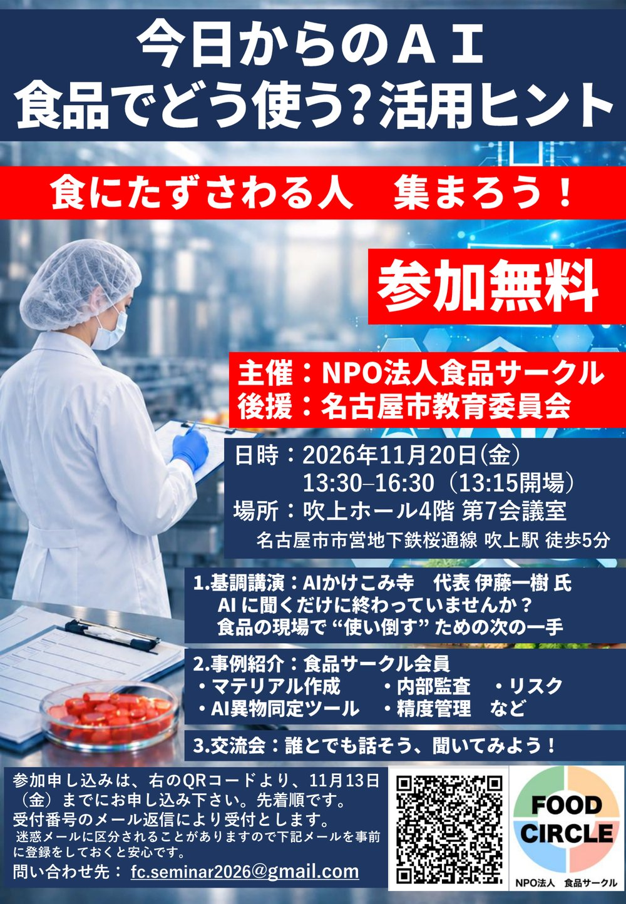

AIに聞くだけに
終わっていませんか？
NPO法人食品サークルのAIセミナーで、AIかけこみ寺 代表の伊藤が基調講演をします。聞くだけの使い方から一歩進んで、仕事で“使い倒す”ための次の一手をお伝えします。食品のお仕事の方はもちろん、AIをもっと使ってみたい方なら、どなたでも歓迎です。
主催者のフォームで申し込む申し込みは主催の食品サークルさんの受付です。受付番号がメールで届きます（迷惑メールに入ることがあるので、fc.seminar2026@gmail.com を受信できるようにしておくと安心です）。
開催概要
- 日時
- 2026年11月20日（金）13:30〜16:30（13:15開場）
- 会場
- 吹上ホール 4階 第7会議室（名古屋市中小企業振興会館・名古屋市千種区吹上2-6-3）
地下鉄桜通線「吹上」駅 5番出口から徒歩5分 - 参加費
- 無料
- 主催
- NPO法人食品サークル
- 後援
- 名古屋市教育委員会
プログラム
- 13:30食品サークルの紹介
食品サークル 代表 水野俊秋さん - 13:40基調講演「AIに聞くだけに終わっていませんか？ 食品の現場で“使い倒す”ための次の一手」
AIかけこみ寺 代表 伊藤一樹 - 14:40休憩
- 15:00生成AI活用事例の紹介（情報の伝達、HP作成、教育資料、AI異物同定ツール、内部監査、リスク、精度管理など）
食品サークル 会員の皆さん - 16:00交流会「誰とでも話そう、誰にでも聞いてみよう」
講師・内容は変更になることがあります。
チラシ

チラシのPDFをダウンロード（印刷してお知り合いに渡していただけると助かります）